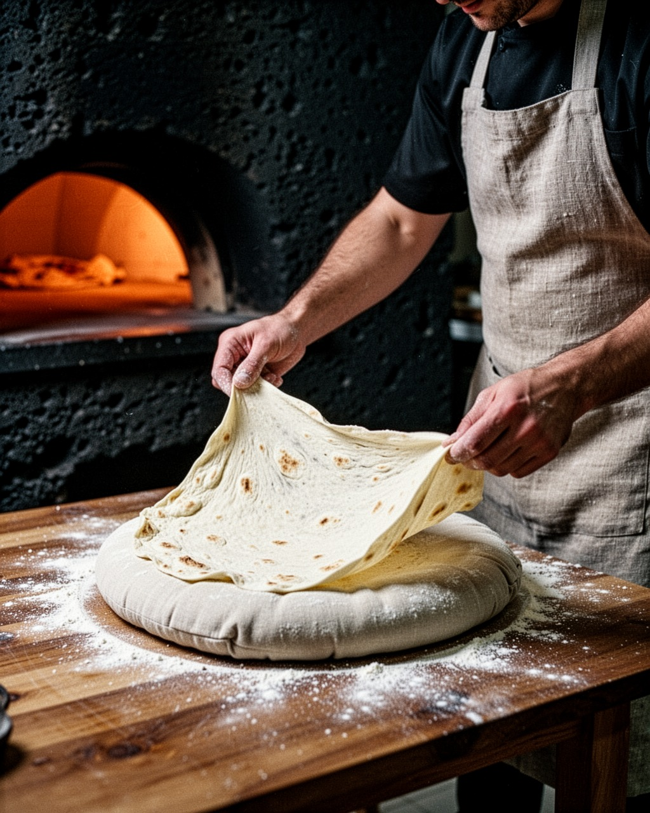
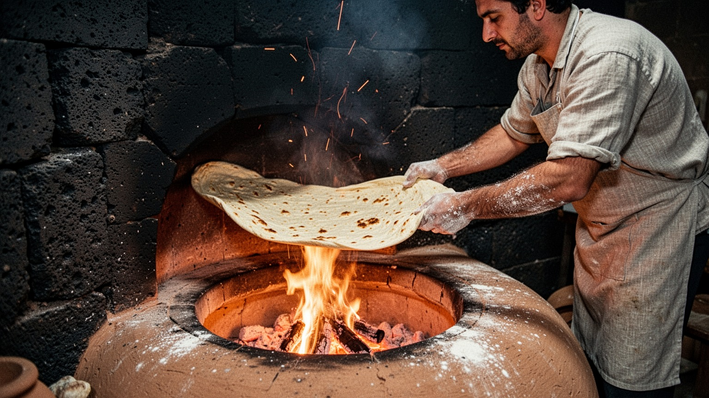
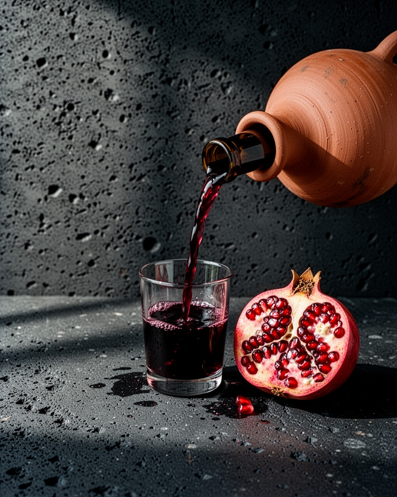

Step 1 of 4: The dough
Stretched by hand until you can read through it.
Flour, water, salt. Each sheet is pulled thin over a cushion and is ready for the fire in under a minute.

Step 2 of 4: The fire
Pressed onto the oven wall at four hundred degrees.
Forty seconds on the clay and it peels off blistered. Meat and fish go in on skewers after the bread.

Step 3 of 4: The table
Everything lands in the middle.
Nobody orders for one here. Khorovats, tolma, herbs and cheese arrive together and get passed around.

Step 4 of 4: The glass
Areni, poured from clay.
Red wine from Vayots Dzor, kept in a clay jug the way it has been for six thousand years.